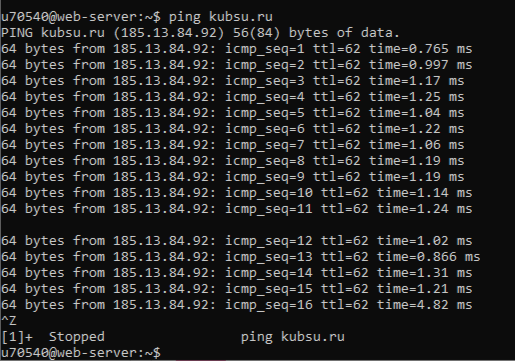
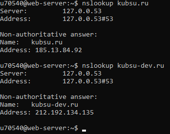
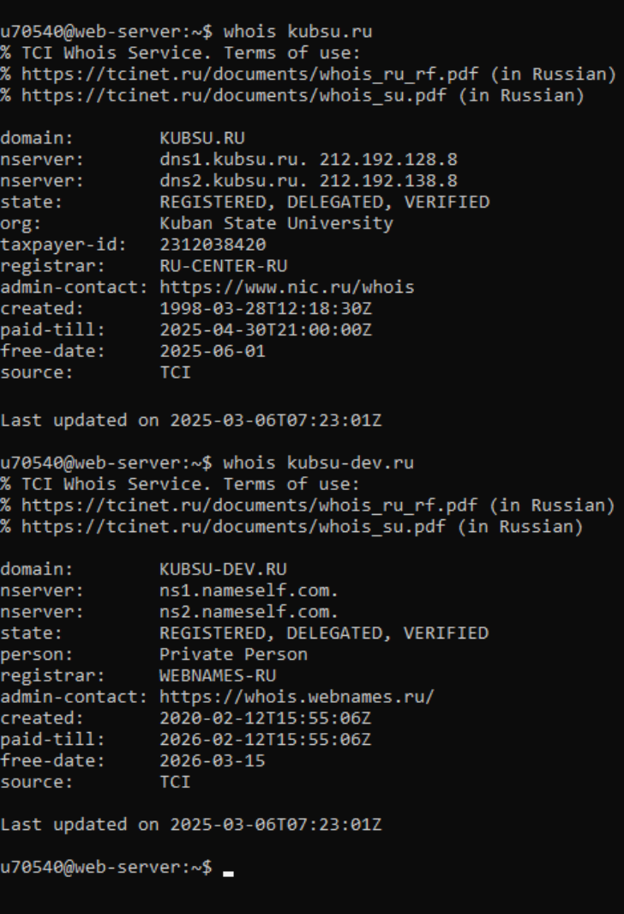

С помощью команды ping на учебном сервере узнали IP-адрес веб-сервера kubsu.ru
С помощью команды nslookup узнали A-записи и MX-записи домена kubsu.ru и kubsu-dev.ru
С помощью команды whois узнатли дату регистрации домена kubsu.ru и kubsu- dev.ru
С помощью программы winscp соединился с учебным сервером и скопировал на локальный компьютер файлы задания из каталога www.